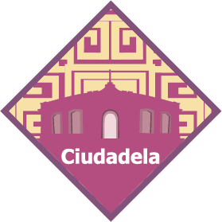
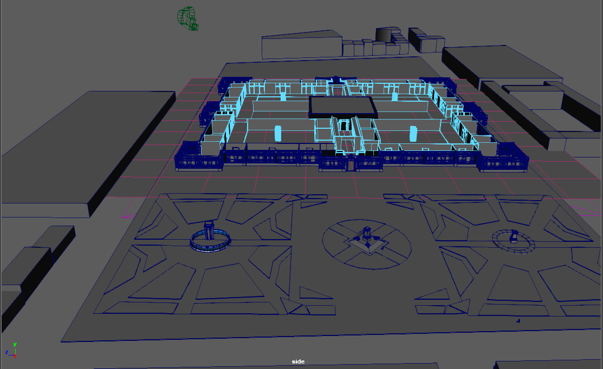
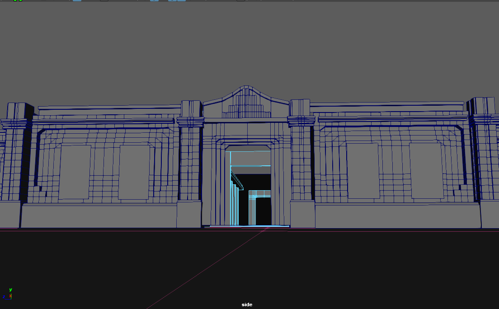
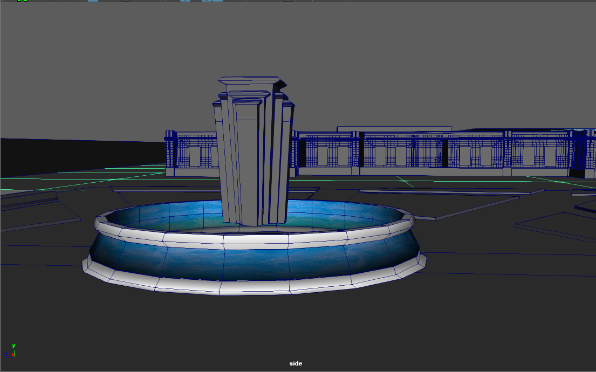
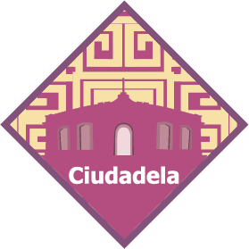
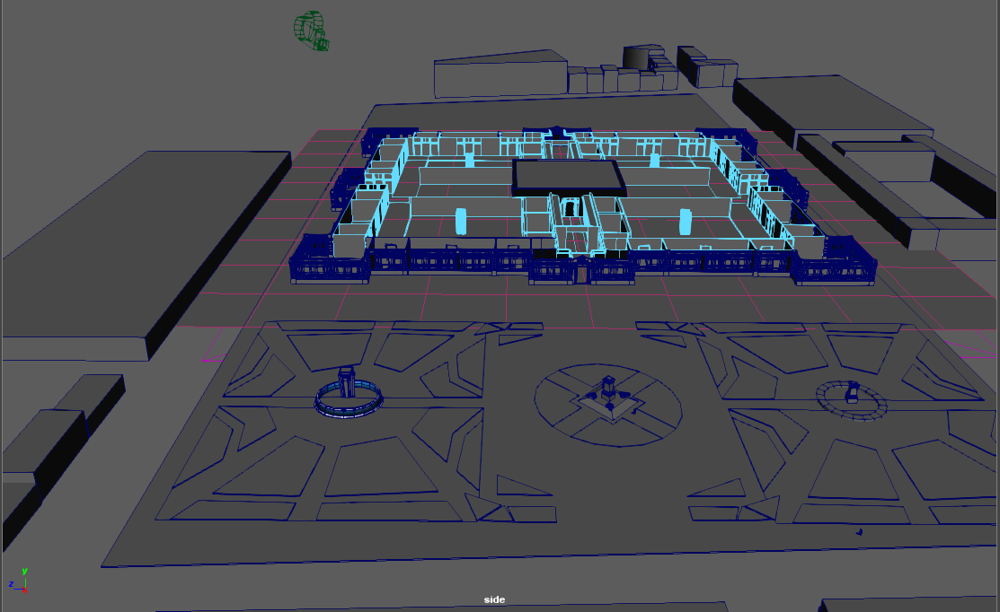
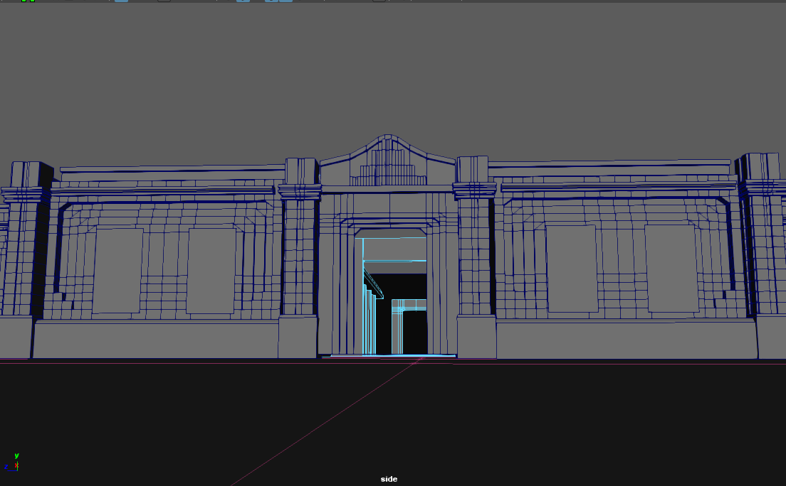
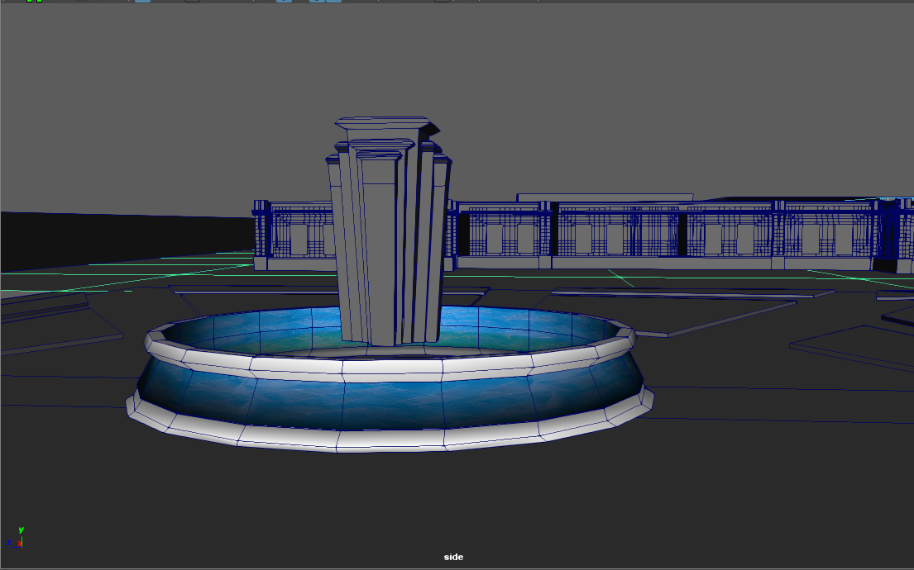

Nombre del proyecto:
Ciudadela
Estudiante:
Paredes Rojas Ian Eduardo
Tema:
Pobreza infantil
Tercer cuatrimestre
Promocionar la Plaza de la Ciudadela, por ser un lugar emblemático del Centro Histórico; el cual es uno de los patrimonios de la humanidad., en la cual se expondrá el tema de la
Objetivos Particulares
1.-Se realiza un escenario 3D inspirado en la Plaza de la Ciudadela,
el cual se usa para mostrar una propuesta de un videojuego.
2.-Una revista llamada; que habla de los aspectos históricos y sociales de la Ciudadela,
3.crear un Motion comicde la Plaza de la Ciudadela
4.-Crea un objeto
5.- generar un sitio web responsivo con dos interacciones realizadas
usando vanilla javascript
6.-prompcionales impresos (cartel, invitación e infografía).
.

 






